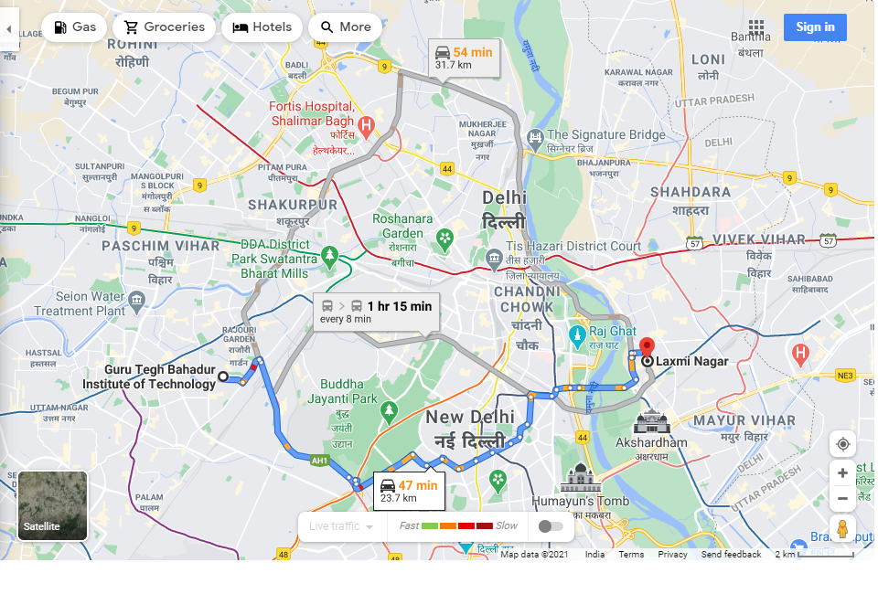
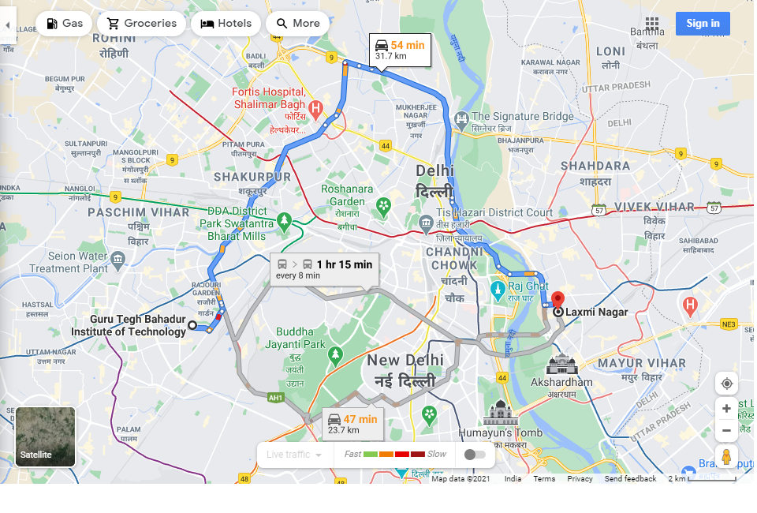

There are 2 valid roots from GTBIT to laxminagar
1. via Mahatma Gandhi Marg
Fastest route now due to traffic conditions without traffic
47 min 23.7 km

Take Sat Guru Ram Singh Rd, Mahatma Gandhi Marg, Sardar Patel Marg, Teen Murti Marg, ... and Vikas Marg to Viswa Karma Park F Block Rd in Laxmi Nagar
41 min (22.6 km)
Head east on Mahakavi Goswami Tulsidas Marg/Swarg Ashram Rd toward Gali Number 2
750 m
Continue to follow Mahakavi Goswami Tulsidas Marg
Turn left onto Sat Guru Ram Singh Rd
1.1 km
Pass by the park (on the left in 950 m)
Turn right at Mayapuri Chowk
150 m
Use any lane to take the ramp onto Mahatma Gandhi Marg/Ring Rd
5.9 km
Continue to follow Mahatma Gandhi Marg
Use the left 2 lanes to take the ramp
300 m
Slight right
190 m
Use the right lane to merge with Sardar Patel Marg
2.6 km
Turn right onto Kautilya Marg
650 m
Pass by High Commission of Sri Lanka (on the left in 600 m)
At the roundabout, take the 3rd exit onto Teen Murti Marg
600 m
Pass by Police Station Chanakyapuri (on the right in 300 m)
At Teen Murti-Haifa Chowk, take the 4th exit and stay on Teen Murti Marg
800 m
At the roundabout, take the 2nd exit onto Akbar Rd
700 m
At the roundabout, take the 2nd exit and stay on Akbar Rd
700 m
At the roundabout, take the 3rd exit and stay on Akbar Rd
850 m
At the roundabout, take the 3rd exit and stay on Akbar Rd
450 m
Use any lane to turn slightly left onto C - Hexagon/India Gate Cir
600 m
Keep left to continue on Copernicus Marg
1.1 km
Pass by Central Administrative Tribunal (on the left in 750 m)
At the roundabout, exit onto Sikandra Rd
950 m
Pass by Himachal Bhawan (on the left)
Turn left onto Bahadur Shah Zafar Marg
300 m
Turn right onto Indraprashta Marg
550 m
Pass by Income Tax Office (on the right)
Continue onto Subhash Chandra Bose Marg/Vikas Marg
300 m
Keep right to continue on Vikas Marg
1.7 km
Use the left 2 lanes to take the ramp to Geeta Colony Rd/Pushta Rd
550 m
Continue onto Geeta Colony Rd/Pushta Rd
850 m
Take Lane Number 8 to Gali Number 4
6 min (1.1 km)
Turn right onto Viswa Karma Park F Block Rd
37 m
Turn left at the 1st cross street
170 m
Turn right toward Lane Number 8
92 m
Continue onto Lane Number 8
500 m
Turn right onto Gali Number 4
290 m
2. via Mahatma Gandhi Marg/Ring Rd and Outer Ring Rd
Lighter traffic than usual without traffic
54 min 31.7 km

Get on Mahatma Gandhi Marg/Ring Rd from Mahakavi Goswami Tulsidas Marg and Sat Guru Ram Singh Rd
5 min (2.1 km)
Head east on Mahakavi Goswami Tulsidas Marg/Swarg Ashram Rd toward Gali Number 2
750 m
Continue to follow Mahakavi Goswami Tulsidas Marg
Turn left onto Sat Guru Ram Singh Rd
1.0 km
Pass by the park (on the left in 950 m)
Use the left 2 lanes to turn left
280 m
Use any lane to take the ramp onto Mahatma Gandhi Marg/Ring Rd
110 m
Take Arihant Marg to NH9 in Model Town
6 min (3.6 km)
Continue onto Azadpur Flyover
650 m
Continue onto Arihant Marg
2.3 km
At the roundabout, take the 2nd exit onto NH9
650 m
Take Outer Ring Rd and NH 44 to Geeta Colony Bridge/Raja Ram Kohli Marg in Raj Ghat. Exit from NH 44
19 min (12.7 km)
Use the right 3 lanes to merge with NH9
550 m
Continue straight onto Burari Flyover/Dr KB Hegdewar Marg/Outer Ring Rd
7.5 km
Continue to follow Outer Ring Rd
Slight left
210 m
Slight left onto NH 44
17 m
Continue straight to stay on NH 44
3.8 km
Pass by the water (on the left in 3.7 km)
Exit onto Geeta Colony Bridge/Raja Ram Kohli Marg
600 m
Continue on Geeta Colony Bridge/Raja Ram Kohli Marg. Take Geeta Colony Rd/Pushta Rd to Gali Number 4 in Vishwakarma Park
9 min (3.5 km)
Merge with Geeta Colony Bridge/Raja Ram Kohli Marg
1.1 km
Use any lane to take the ramp onto Geeta Colony Rd/Pushta Rd
600 m
Keep right to continue on Geeta Colony Rd/Pushta Rd/SDM Court Flyover
850 m
Continue to follow Geeta Colony Rd/Pushta Rd
Turn left toward Lane Number 8
110 m
Continue onto Lane Number 8
500 m
Turn right onto Gali Number 4
290 m